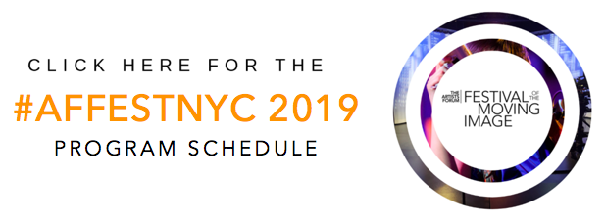

THE ARTISTS FORUM FESTIVAL OF THE MOVING IMAGE: 2019 (#affestnyc) was a three day event held October 17 – 19, 2019 in mid-town Manhattan. This fourth annual event showcased 30 short films of multiple genres from independent filmmakers originating from 9 countries: Afghanistan, Argentina, Dominican Republic, France, India, Iran, Portugal, Spain, and the United States. The festival requires that films present innovative vision and unique perspectives in 30 minutes or less.
Screenings were held October 17 and 18 from 8:30PM to 10:30 PM, and October 19 from 7PM to 11PM at the exclusive Dolby Screening Room — a state-of-the-art, ADA compliant screening facility at 1350 Avenue of the Americas at West 55th Street (Lobby Level) in Mid-town Manhattan. Each year, the festival highlights a wide variety of categories, such as: Narrative, Experimental, Sci-Fi, Dark Themes, and Music Video. This year, the festival’s featured special themed category was SOCIAL JUSTICE.

2019 Festival Sponsors: New York & Company Foundation, LinkNYC, and Mombucha Kombucha.
2019 Festival Partners: Dolby, Crunch, Paramount Hotel, Stewart Hotel, and MNN.
2019 Festival Jury: Stefanie Alleyne, Greg Chwerchak, Motaz Elbahaey, Martha Gorzycki, Henry Kanegsberg, Djordje Radovanovich, David Ranghelli, Jonathan Ullman, Amos White V, and Vitkor Witkowski.

THE ARTISTS FORUM INC., celebrating its 20th year, is a NY state non-profit arts service organization specializing in events, media, and juried competitions for artists. Its FESTIVAL OF THE MOVING IMAGE is the organization’s flagship program.
AFFESTNYC 2019 was funded in part by a grant from the NYC & Company Foundation.
For more information about the festival, volunteering, partnerships, and sponsorships, visit: HTTP://THEARTISTSFORUM.ORG/FILMFEST/AFFESTNYC.HTML
Follow THE ARTISTS FORUM:
THE ARTISTS FORUM ON FACEBOOK, #AFFESTNYC ON FACEBOOK, INSTAGRAM, TWITTER, YOUTUBE, and VIMEO at @theartistsforum
Hashtag: #affestnyc